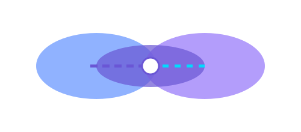

Théorie des ensembles & Graphes
Théorie des ensembles

- Visualisation des ensembles de données, intersections et exclusions (style "patates lissées")
- Exemple : gestion des dépendances entre fichiers, groupes, pipelines
- Outils pour exporter des représentations graphiques (SVG, PNG, HTML interactif)
Graphes et dépendances
- Représentation visuelle des relations : clés, modules, exécutions, pipelines
- Outils pour manipuler et explorer les graphes dans l’interface
- Possibilité de brancher vos propres plugins de visualisation (pour chercheurs, data scientists…)